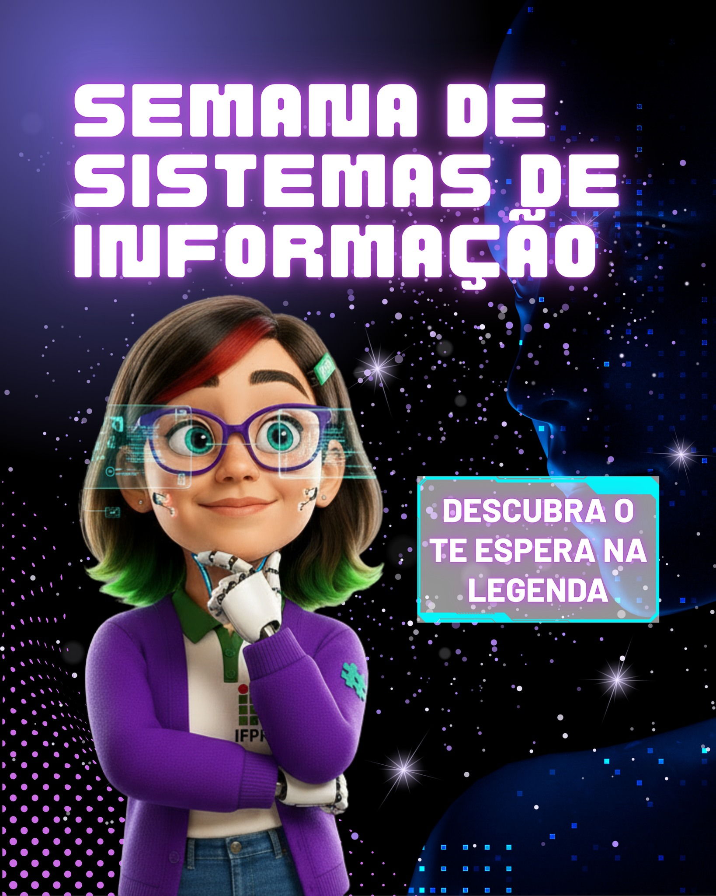
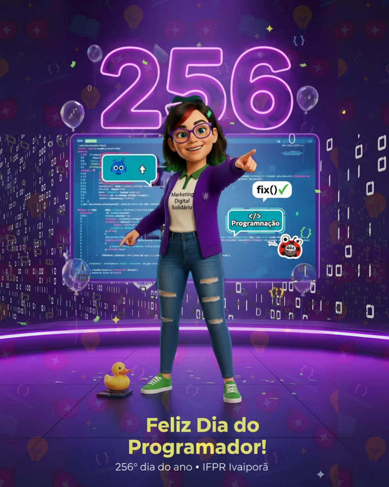

Sobre o Projeto
💜✨ A IFizinha é a embaixadora virtual do Projeto Marketing Digital Solidário do IFPR Ivaiporã,
criada para tornar a comunicação mais clara, acessível e próxima dos estudantes. No Portal
Conecta, ela guia a navegação, traduz
editais em linguagem simples, dá visibilidade aos projetos e humaniza a comunicação
institucional. Mais que uma mascote, é a voz digital e acolhedora do campus, unindo tecnologia,
criatividade e acolhimento para aproximar pessoas, ideias e oportunidades. 🌟
No Portal Conecta, a IFizinha terá um papel essencial:
Traduzir editais em uma linguagem simples e acessível.
Guiar a navegação dos usuários, tornando a experiência leve e intuitiva.
Dar visibilidade aos projetos do campus, conectando estudantes, professores e comunidade.
Humanizar a comunicação institucional, fortalecendo os laços com o público.
🌟 Em resumo, a IFizinha é a cara digital do IFPR Ivaiporã: inovadora, criativa e feita para
estar ao lado dos estudantes em cada passo da jornada acadêmica..
Últimas Notícias

18 de Setembro de 2025
Título da Notícia ou Evento Importante
Um breve resumo da atualização, como a participação em um evento, o início de uma
nova fase de pesquisa ou a abertura de inscrições para voluntários...
Leia mais

12 de Setembro de 2025
Resultados da Primeira Etapa Publicados
Concluímos a primeira fase do projeto com sucesso! Agradecemos a todos os envolvidos.
Confira nosso relatório preliminar e os próximos passos...
Leia mais